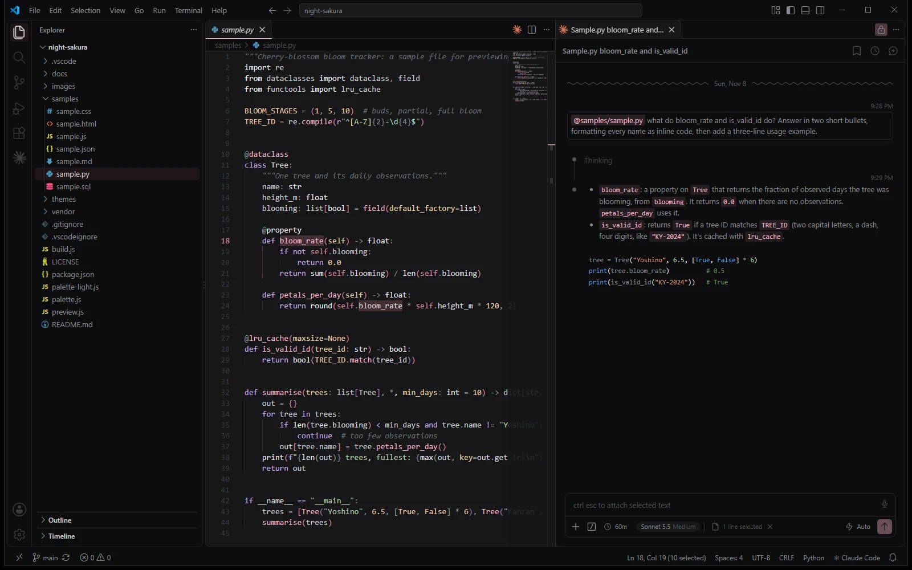
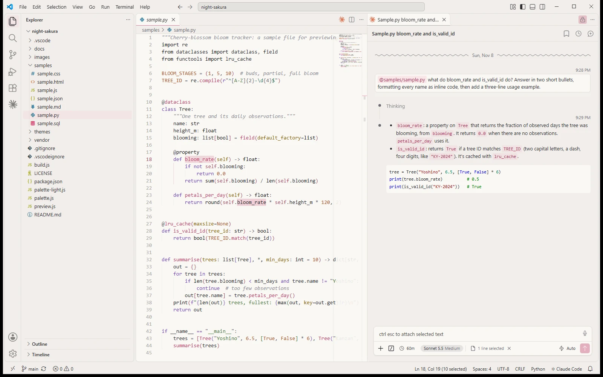

# Night Sakura VS Code Theme
My own VS Code theme, in the same colors as this site: near-black and gray, with cherry-blossom pink for highlights. It comes in a dark and a light version and also colors the Claude Code panel. A small Node script builds both versions from one palette file, and won't save a theme with a color that's hard to read.

